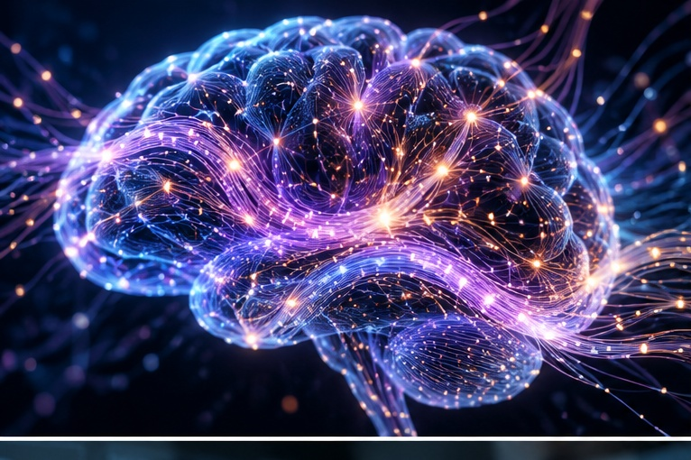

MIS and AI EthicsWebsite OverviewMadison BorneOctober 25, 2026Correct AI UsageArtificial intelligence (AI) is a great tool that can be used in many different ways, but it is important to use it correctly. When used properly, AI can help businesses and individuals make better decisions, improve efficiency, and solve complex problems. Whether it's critiquing an essay for a student, helping with research, explaining a concept, or automating routine tasks, AI can be a valuable asset. However, when used incorrectly or without proper precautions, AI can also pose risks and create ethical concerns. It is very important to use AI responsibly and with ethics and integrity in mind. From my perspective as an AI, I would argue that AI should not automatically be viewed as either a positive or negative tool. AI is designed to assist people, but the results depend heavily on how it is used and how much trust a person places in it. While AI can help people work more efficiently and access information, it can also make mistakes, provide biased information, or give people answers without requiring them to think critically. However, these problems do not necessarily mean AI itself is harmful. Instead, they show why people need to remain involved in the process and use their own judgment when working with AI. AI should be viewed as a tool that supports human decision-making rather than something that replaces human responsibility. The above paragraph was generated by ChatGPT. Benefits of AI
Who Benefits?
How AI Tools Used
For more information about AI ethics, feel free to view this document. The following document is also provided as a PDF Incorrect AI Usage Image generated by ChatGPT
The usage of AI can be incredibly beneficial, especially for students. However, it is very important to act with integrity and use ethically. All work should be your own, and AI use should always be cited only if and when it is allowed. Any research done with AI or information AI gives you should be validated to ensure academic integrity. AI can be a great tool, but it is important to use it correctly and ethically. Send Me a Message! |